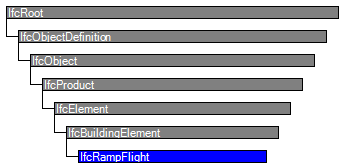

| Rampenlauf |
 | Ramp Flight |
 | Volée |
| Item | SPF | XML | Change | Description | 4.0.0.0 |
|---|---|---|---|---|
| IfcRampFlight | ||||
| OwnerHistory | MODIFIED | Instantiation changed to OPTIONAL. | ||
| PredefinedType | ADDED |
A ramp comprises a single inclined segment, or several inclined segments that are connected by a horizontal segment, refered to as a landing. A ramp flight is the single inclined segment and part of the ramp construction. In case of single flight ramps, the ramp flight and the ramp are identical.
NOTE A single flight ramp is represented by an IfcRamp instance without using aggregation and by utilizing the product shape representation directly at IfcRamp.
An IfcRampFlight is an aggregated part of an IfcRamp realized through the IfcRelAggregates relationship, the ramp flight is therefore included in the set of IfcRelAggregates.RelatedObjects.
An IfcRampFlight connects the floor slab of zero to two different storeys (or partial storeys or landings) within a building. The connection relationship between the IfcRampFlight and the IfcSlab can be expressed using the IfcRelConnectsElements relationship.
HISTORY New entity in IFC2.0.
| # | Attribute | Type | Cardinality | Description | R |
|---|---|---|---|---|---|
| 9 | PredefinedType | IfcRampFlightTypeEnum | ? |
Predefined generic type for a ramp flight that is specified in an enumeration. There may be a property set given specificly for the predefined types.
NOTE The PredefinedType shall only be used, if no IfcRampFlightType is assigned, providing its own IfcRampFlightType.PredefinedType. IFC4 CHANGE The attribute has been added at the end of the entity definition. | X |
| Rule | Description |
|---|---|
| CorrectPredefinedType | Either the PredefinedType attribute is unset (e.g. because an IfcRampFlightType is associated), or the inherited attribute ObjectType shall be provided, if the PredefinedType is set to USERDEFINED. |
| CorrectTypeAssigned | Either there is no ramp flight type object associated, i.e. the IsTypedBy inverse relationship is not provided, or the associated type object has to be of type IfcRampFlightType. |

| # | Attribute | Type | Cardinality | Description | R |
|---|---|---|---|---|---|
| IfcRoot | |||||
| 1 | GlobalId | IfcGloballyUniqueId | Assignment of a globally unique identifier within the entire software world. | X | |
| 2 | OwnerHistory | IfcOwnerHistory | ? |
Assignment of the information about the current ownership of that object, including owning actor, application, local identification and information captured about the recent changes of the object,
NOTE only the last modification in stored - either as addition, deletion or modification. IFC4 CHANGE The attribute has been changed to be OPTIONAL. | X |
| 3 | Name | IfcLabel | ? | Optional name for use by the participating software systems or users. For some subtypes of IfcRoot the insertion of the Name attribute may be required. This would be enforced by a where rule. | X |
| 4 | Description | IfcText | ? | Optional description, provided for exchanging informative comments. | X |
| IfcObjectDefinition | |||||
| HasAssignments | IfcRelAssigns @RelatedObjects | S[0:?] | Reference to the relationship objects, that assign (by an association relationship) other subtypes of IfcObject to this object instance. Examples are the association to products, processes, controls, resources or groups. | X | |
| Nests | IfcRelNests @RelatedObjects | S[0:1] | References to the decomposition relationship being a nesting. It determines that this object definition is a part within an ordered whole/part decomposition relationship. An object occurrence or type can only be part of a single decomposition (to allow hierarchical strutures only).
IFC4 CHANGE The inverse attribute datatype has been added and separated from Decomposes defined at IfcObjectDefinition. | ||
| IsNestedBy | IfcRelNests @RelatingObject | S[0:?] | References to the decomposition relationship being a nesting. It determines that this object definition is the whole within an ordered whole/part decomposition relationship. An object or object type can be nested by several other objects (occurrences or types).
IFC4 CHANGE The inverse attribute datatype has been added and separated from IsDecomposedBy defined at IfcObjectDefinition. | X | |
| HasContext | IfcRelDeclares @RelatedDefinitions | S[0:1] | References to the context providing context information such as project unit or representation context. It should only be asserted for the uppermost non-spatial object.
IFC4 CHANGE The inverse attribute datatype has been added. | ||
| IsDecomposedBy | IfcRelAggregates @RelatingObject | S[0:?] | References to the decomposition relationship being an aggregation. It determines that this object definition is whole within an unordered whole/part decomposition relationship. An object definitions can be aggregated by several other objects (occurrences or parts).
IFC4 CHANGE The inverse attribute datatype has been changed from the supertype IfcRelDecomposes to subtype IfcRelAggregates. | X | |
| Decomposes | IfcRelAggregates @RelatedObjects | S[0:1] | References to the decomposition relationship being an aggregation. It determines that this object definition is a part within an unordered whole/part decomposition relationship. An object definitions can only be part of a single decomposition (to allow hierarchical strutures only).
IFC4 CHANGE The inverse attribute datatype has been changed from the supertype IfcRelDecomposes to subtype IfcRelAggregates. | X | |
| HasAssociations | IfcRelAssociates @RelatedObjects | S[0:?] | Reference to the relationship objects, that associates external references or other resource definitions to the object.. Examples are the association to library, documentation or classification. | X | |
| IfcObject | |||||
| 5 | ObjectType | IfcLabel | ? |
The type denotes a particular type that indicates the object further. The use has to be established at the level of instantiable subtypes. In particular it holds the user defined type, if the enumeration of the attribute PredefinedType is set to USERDEFINED.
| X |
| IsTypedBy | IfcRelDefinesByType @RelatedObjects | S[0:1] | Set of relationships to the object type that provides the type definitions for this object occurrence. The then associated IfcTypeObject, or its subtypes, contains the specific information (or type, or style), that is common to all instances of IfcObject, or its subtypes, referring to the same type.
IFC4 CHANGE New inverse relationship, the link to IfcRelDefinesByType had previously be included in the inverse relationship IfcRelDefines. Change made with upward compatibility for file based exchange. | X | |
| IsDefinedBy | IfcRelDefinesByProperties @RelatedObjects | S[0:?] | Set of relationships to property set definitions attached to this object. Those statically or dynamically defined properties contain alphanumeric information content that further defines the object.
IFC4 CHANGE The data type has been changed from IfcRelDefines to IfcRelDefinesByProperties with upward compatibility for file based exchange. | X | |
| IfcProduct | |||||
| 6 | ObjectPlacement | IfcObjectPlacement | ? | Placement of the product in space, the placement can either be absolute (relative to the world coordinate system), relative (relative to the object placement of another product), or constraint (e.g. relative to grid axes). It is determined by the various subtypes of IfcObjectPlacement, which includes the axis placement information to determine the transformation for the object coordinate system. | X |
| 7 | Representation | IfcProductRepresentation | ? | Reference to the representations of the product, being either a representation (IfcProductRepresentation) or as a special case a shape representations (IfcProductDefinitionShape). The product definition shape provides for multiple geometric representations of the shape property of the object within the same object coordinate system, defined by the object placement. | X |
| IfcElement | |||||
| 8 | Tag | IfcIdentifier | ? | The tag (or label) identifier at the particular instance of a product, e.g. the serial number, or the position number. It is the identifier at the occurrence level. | X |
| FillsVoids | IfcRelFillsElement @RelatedBuildingElement | S[0:1] | Reference to the IfcRelFillsElement Relationship that puts the element as a filling into the opening created within another element. | ||
| HasOpenings | IfcRelVoidsElement @RelatingBuildingElement | S[0:?] | Reference to the IfcRelVoidsElement relationship that creates an opening in an element. An element can incorporate zero-to-many openings. For each opening, that voids the element, a new relationship IfcRelVoidsElement is generated. | X | |
| ContainedInStructure | IfcRelContainedInSpatialStructure @RelatedElements | S[0:1] | Containment relationship to the spatial structure element, to which the element is primarily associated. This containment relationship has to be hierachical, i.e. an element may only be assigned directly to zero or one spatial structure. | X | |
| IfcBuildingElement | |||||
| IfcRampFlight | |||||
| 9 | PredefinedType | IfcRampFlightTypeEnum | ? |
Predefined generic type for a ramp flight that is specified in an enumeration. There may be a property set given specificly for the predefined types.
NOTE The PredefinedType shall only be used, if no IfcRampFlightType is assigned, providing its own IfcRampFlightType.PredefinedType. IFC4 CHANGE The attribute has been added at the end of the entity definition. | X |
Object Typing
The Object Typing concept template applies to this entity as shown in Table 83.
| ||||
Table 83 — IfcRampFlight Object Typing |
Property Sets for Objects
The Property Sets for Objects concept template applies to this entity as shown in Table 84.
| ||||||||||||||||||||||||||||||||
Table 84 — IfcRampFlight Property Sets for Objects |
Quantity Sets
The Quantity Sets concept template applies to this entity as shown in Table 85.
| |||||||||||||||||||||||||||||||||||||||||
Table 85 — IfcRampFlight Quantity Sets |
Element Composition
The Element Composition concept template applies to this entity as shown in Table 86.
| ||||||
Table 86 — IfcRampFlight Element Composition |
The IfcRampFlight shall only be used within the component breakdown structure of an IfcRamp.
Spatial Containment
The Spatial Containment concept applies to this entity, and overrides usage indicated at supertypes.
Since the IfcRampFlight is always a component of IfcRamp it shall not have an independent spatial containment relationship to a spatial structure.
<?xml version="1.0"?>
<ConceptRoot xmlns:xsi="http://www.w3.org/2001/XMLSchema-instance" xmlns:xsd="http://www.w3.org/2001/XMLSchema" uuid="6e65873b-2ccf-44cc-94c5-cc703b34d7de" name="IfcRampFlight" status="sample" applicableRootEntity="IfcRampFlight">
<Applicability uuid="00000000-0000-0000-0000-000000000000" status="sample">
<Template ref="bacf8a9b-dd1c-4055-8a29-4985cd0fb8c3" />
<TemplateRules operator="and" />
</Applicability>
<Concepts>
<Concept uuid="314e0810-04bd-4979-9fa3-7eeeea0bac44" name="Object Typing" status="sample" override="false">
<Template ref="35a2e10e-20df-40f4-ab2f-dacf0a6744f4" />
<Requirements>
<Requirement applicability="export" requirement="recommended" exchangeRequirement="dcd96125-898e-4ff0-b294-eb02afe953aa" />
<Requirement applicability="import" requirement="recommended" exchangeRequirement="dcd96125-898e-4ff0-b294-eb02afe953aa" />
</Requirements>
<TemplateRules operator="and">
<TemplateRule Parameters="RelatingType=IfcRampFlightType;" />
</TemplateRules>
</Concept>
<Concept uuid="a8c7d5b0-8856-4f62-93f1-b0bf01eb37ef" name="Property Sets for Objects" status="sample" override="false">
<Template ref="f74255a6-0c0e-4f31-84ad-24981db62461" />
<TemplateRules operator="and">
<TemplateRule Parameters="PsetName=Pset_RampFlightCommon;" />
</TemplateRules>
</Concept>
<Concept uuid="5d3e4409-9d54-4bd2-8c0e-7f155ea86692" name="Quantity Sets" status="sample" override="false">
<Template ref="6652398e-6579-4460-8cb4-26295acfacc7" />
<Requirements>
<Requirement applicability="export" requirement="recommended" exchangeRequirement="dcd96125-898e-4ff0-b294-eb02afe953aa" />
<Requirement applicability="import" requirement="recommended" exchangeRequirement="dcd96125-898e-4ff0-b294-eb02afe953aa" />
</Requirements>
<TemplateRules operator="and">
<TemplateRule Parameters="QsetName=Qto_RampFlightBaseQuantities;" />
</TemplateRules>
</Concept>
<Concept uuid="71cc15ff-4e75-4adc-9bd8-765bf5eeda6b" name="Element Composition" status="sample" override="false">
<Template ref="ca0f65e2-3913-4fdb-8a09-0c5c7a0d5421" />
<TemplateRules operator="and">
<TemplateRule Description="The <em>IfcRampFlight</em> is defined as a component of <em>IfcRamp</em>." Parameters="Composite=IfcRamp;" />
</TemplateRules>
</Concept>
<Concept uuid="956a45b9-8630-4677-bc09-66457d7cef97" name="Spatial Containment" status="sample" override="true">
<Template ref="d9a3f822-0014-4bc2-8d94-9d9067759045" />
</Concept>
</Concepts>
</ConceptRoot>
<xs:element name="IfcRampFlight" type="ifc:IfcRampFlight" substitutionGroup="ifc:IfcBuildingElement" nillable="true"/>
<xs:complexType name="IfcRampFlight">
<xs:complexContent>
<xs:extension base="ifc:IfcBuildingElement">
<xs:attribute name="PredefinedType" type="ifc:IfcRampFlightTypeEnum" use="optional"/>
</xs:extension>
</xs:complexContent>
</xs:complexType>
ENTITY IfcRampFlight
SUBTYPE OF (IfcBuildingElement);
PredefinedType : OPTIONAL IfcRampFlightTypeEnum;
WHERE
CorrectPredefinedType : NOT(EXISTS(PredefinedType)) OR
(PredefinedType <> IfcRampFlightTypeEnum.USERDEFINED) OR
((PredefinedType = IfcRampFlightTypeEnum.USERDEFINED) AND EXISTS (SELF\IfcObject.ObjectType));
CorrectTypeAssigned : (SIZEOF(IsTypedBy) = 0) OR
('IFCSHAREDBLDGELEMENTS.IfcRampFlightType' IN TYPEOF(SELF\IfcObject.IsTypedBy[1].RelatingType));
END_ENTITY;
 Instance diagram
Instance diagram Link to this page
Link to this page